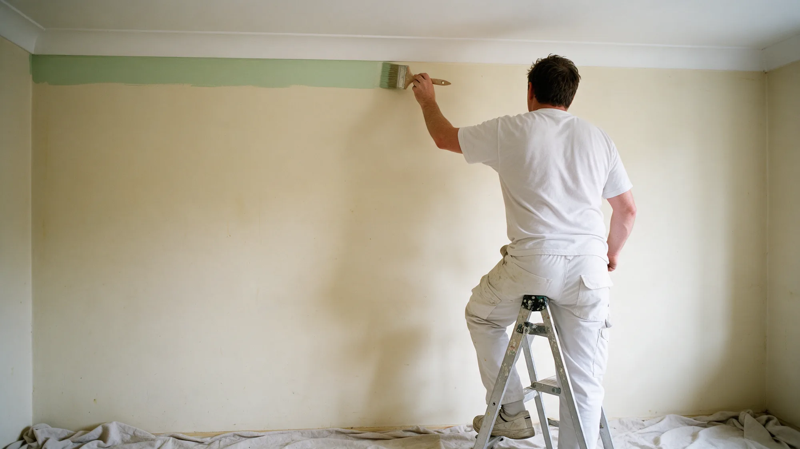
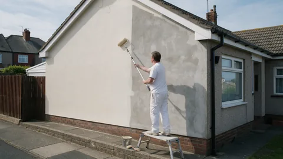
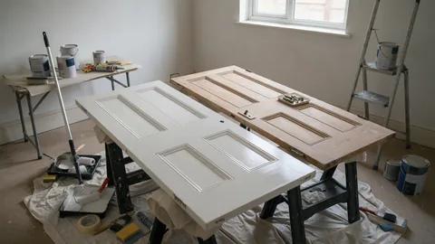
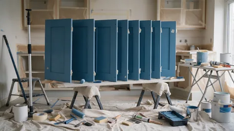
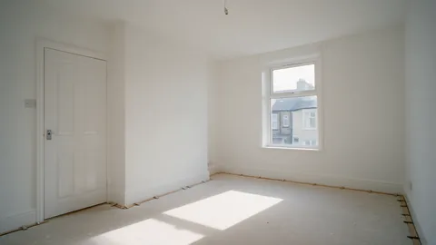
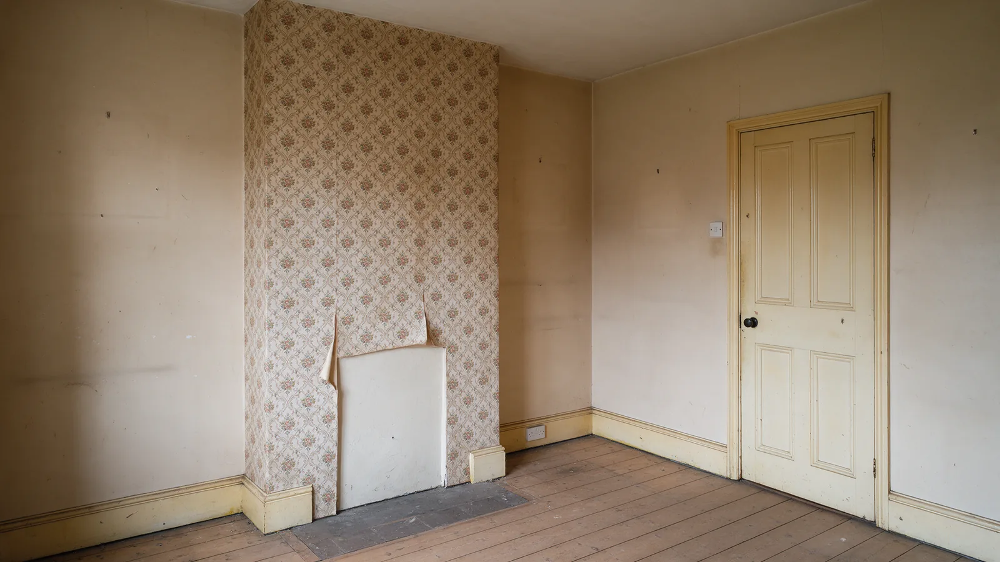
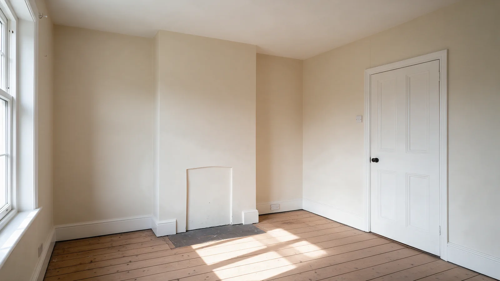
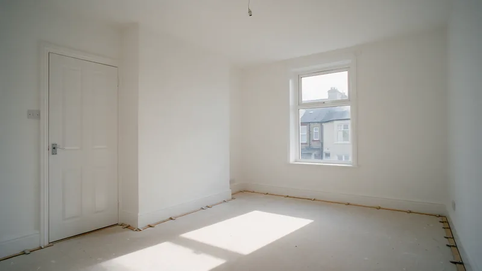
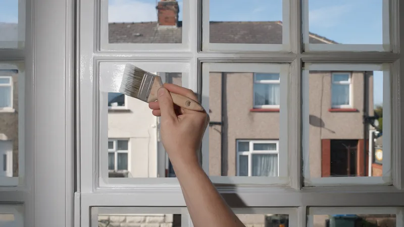
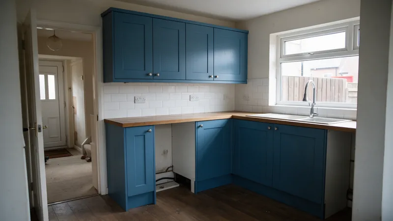

Generated photoPainting and decorating · Fylde coast
A straight line,
and a wall that stays done.
Interior and exterior painting, wallpaper, woodwork and kitchen cabinets. Filled, caulked, sanded and dusted off before a drop of paint goes on, because that is where the finish actually comes from.
Finishes
Four sheens, and where each one belongs.
The difference is how much light the paint throws back at you, and that decides how much of the wall underneath you can see.
Matt
Throws almost nothing back, so it hides a wall better than anything else. Walls and ceilings. Not for anywhere that needs scrubbing.
Eggshell
A low soft lift. Wipeable enough for a hall or a kitchen wall, and the usual choice on woodwork in a house where gloss would look too hard.
Satin
A defined band of light with an edge to it. Tough, easy to clean, and it starts to show whatever is underneath, so the sanding has to be right.
Gloss
A hard highlight and a reflection under it. The most hard wearing and the least forgiving. Every dent, every ridge and every missed sanding mark shows.
Surfaces drawn in the browser rather than photographed, so nothing here is pretending to be a product you can order.
What we do
Six kinds of job.
 Generated photo
Generated photoInterior painting
Walls, ceilings and the bits either side of them. Filled, caulked, sanded and dusted off before a drop of paint goes on, then laid off properly.

Generated photoExterior painting
Render, pebbledash and masonry out front, and the timber that holds it all together. Done in the right months, on a dry wall, in the right order.
 Generated photo
Generated photoWallpaper hanging
One feature wall or a whole room. Lining where the wall needs it, plumbed off a line rather than off the corner, and patterns matched at every seam.

Generated photoWoodwork and doors
Skirtings, architraves, window boards, spindles and doors. Sanded flat, knotted and primed where it is bare, then brushed so you cannot find the laps.

Generated photoKitchen cabinet painting
Doors off, degreased, keyed, primed for the surface they actually are, then two thin coats. A new looking kitchen without a new kitchen.

Generated photoCommercial and rental refreshes
Empty flats, offices, salons and holiday lets. Worked round the keys and the cleaners rather than round us, and left ready to photograph.
How it works
Four steps, and a good light on the wall.
You tell us what is there
A call, the chat box or the form. Which rooms, walls or woodwork or both, and what is on them now: old paint, paper, bare plaster, a ceiling somebody has patched. That is usually enough to know what we are looking at.
Somebody comes and looks properly
A light held along each wall to see what the filling will be, a thumbnail on the woodwork to see what the old paint is doing, and a look at anything damp or stained. Twenty minutes to half an hour.
You get it in writing, room by room
What is being prepared and how far, what is getting two coats, what is being left alone and why, and what is not included. Separate lines, so you can hold it against anybody else's.
We do it and put the room back
Sheets down first, handles and plates off rather than painted round, dust taken off properly, and the room swept and put back at the end of each day Sample.


Illustrative, not a real job. Both pictures were generated for this demo from the same room, once tired and once decorated, so the window, the proportions and the floorboards are the same in each.
Before and after
Most of that happened before any paint.
Drag the slider. On the left, yellowed gloss on the skirting and the door, a wall full of old hook holes and scuffs, and a busy paper on the chimney breast that had started to lift at one seam.
On the right it is one quiet colour and the woodwork is crisp. The bit worth noticing is that almost none of that difference is the paint. The paper came off and the wall behind it was washed down and made good. The holes were filled, the gaps along the skirting and the architrave were caulked, the whole lot was sanded and the dust taken off. Painting it was the last day. If somebody quotes you a room and only talks about colour, they have quoted you the easy day.
See the rest of the workOur work
Sample jobs.
12 jobs
 Generated photoCutting in the first wallLytham St Annes · Sample
Generated photoCutting in the first wallLytham St Annes · Sample Generated photoLaying off a long wallPoulton-le-Fylde · Sample
Generated photoLaying off a long wallPoulton-le-Fylde · Sample Generated photoHall, stairs and landingKirkham · Sample
Generated photoHall, stairs and landingKirkham · Sample
Generated photoA flat turned round between tenantsFleetwood · SampleGenerated photoThe front, back in colourThornton-Cleveleys · Sample
Generated photoFrames cut inLytham St Annes · Sample Generated photoHanging off a plumb linePoulton-le-Fylde · Sample
Generated photoHanging off a plumb linePoulton-le-Fylde · Sample Generated photoMatched at every seamLytham St Annes · Sample
Generated photoMatched at every seamLytham St Annes · Sample Generated photoDoors off and flatKirkham · Sample
Generated photoDoors off and flatKirkham · Sample Generated photoA long run of skirtingThornton-Cleveleys · Sample
Generated photoA long run of skirtingThornton-Cleveleys · Sample Generated photoCabinet doors dryingFleetwood · Sample
Generated photoCabinet doors dryingFleetwood · Sample
Generated photoBack on and levelPoulton-le-Fylde · SampleEvery job here is a made up sample with a generated picture. Tap one to see it bigger.
Where we work
Based on the Fylde coast.
Based on the Fylde coast Sample. These are the towns we cover most. Coverage is a sample for this demo. A bit outside it? Ask anyway, it depends what else is on that week.
 Generated photo
Generated photoWhat people say
Sample reviews.
Sample review
Had three quotes for the lounge and the hall. Two of them talked about paint. This lot talked about the walls, pointed out the bit by the bay that needed sealing first and said why. It is the only quote that mentioned the ceiling cracks at all.
Keeley, Lytham St Annes
Sample review
Kitchen doors rather than a new kitchen. They were straight with me that it would not look like a factory finish up close and that the inside of the doors would take the knocks first. Still glad I did it, and it cost a fraction.
Rob, Poulton-le-Fylde
Sample review
Front of the house was chalky and the frames were going. They would not start the week I wanted because it was wet, and said so rather than taking the money. Came back the week after and it was worth waiting for.
Annette, Thornton-Cleveleys
Sample review
Flat between tenants, four days. Sheets down before anything, handles and plates off instead of painted round, and the caulking along the skirtings is the thing I keep noticing. No dark lines anywhere.
Sam, Kirkham
Made up for this demo. Coatsby does not exist, so neither do its customers.
Questions
What people ask us first.
Do you move the furniture?
We will shift what is sensible and we would rather you did not try to do all of it yourself. Big things get pulled into the middle and covered. Small, valuable or breakable things are better out of the room altogether, because a room with ornaments still in it is a room nobody can work in properly.
What we will not do is lift anything that really wants two people and a van, disconnect appliances, or take down anything fixed to the wall that is holding weight. If the room can be emptied, empty it. An empty room is faster, tidier and cheaper than a full one, every time.
How long does a room take?
An ordinary bedroom in sound condition, walls and ceiling only, is usually about a day. Add the woodwork and it is more like two, because the filling and sanding takes longer than the painting and oil based paint wants overnight between coats.
Anything that needs real making good adds time before any paint exists: holes, cracks, old paper to strip, a ceiling that has been patched. That is the part that varies, and it is the part worth asking every quote about. Anybody who gives you a price without looking at the walls is guessing at it.
Do I buy the paint?
Either way, and we will tell you plainly which suits you. If you want a particular colour or a particular finish, buying it yourself means you choose exactly what goes on and you keep the leftovers for touching up, which is genuinely useful later.
If you would rather not, we will get it. What we will not do is tell you one make is the only one worth having, because that depends far more on the surface and the room than on the tin. We will say what sort of paint the job needs: how much covering it has to do, what sheen, and whether it wants to be wipeable.
When is the best time to paint outside?
Late spring through to early autumn, and the real limits are the wall and the weather rather than the month. Most exterior paints want a dry surface, no rain due for a few hours and a temperature that is not dropping towards freezing overnight.
The thing that catches people out is not the cold, it is the dew. In autumn a wall can be bone dry at two in the afternoon and soaking by five, and paint that has not gone off by then will not do what it should. That is why we stop earlier in the day as the year goes on, and why we will move a week rather than push on in bad weather.
Can you paint uPVC or kitchen units?
Both, as long as everybody knows what they are getting. uPVC can be painted, and it wants a thorough clean, a key and a primer made for plastic. Done properly it looks good and lasts a long while. Done without the primer it peels off in sheets within a year, which is why it has a mixed reputation.
Kitchen units are the same story. Doors come off, get degreased properly because kitchen grease is the real enemy, get keyed and primed, then two thin coats. Up close it will not look like a sprayed factory door, and the edges and the handle areas take the wear first. It is a big change for a small spend, and it is not the same thing as a new kitchen.
Do you fill and sand, or just paint over?
Fill, caulk, sand and dust off, every time, because that is where nearly all of the finish comes from. Paint is thin. It does not hide a dent, it lights it up, and a good light across a wall at four in the afternoon will show every one you left.
If you only want a quick coat over the top, say so and we will price that instead and tell you honestly what it will and will not look like. What we will not do is quietly skip the prep and let the wall tell you about it in a fortnight.
Will there be much mess and smell?
Less mess than people expect and more dust than they hope, because sanding filler makes dust wherever it happens. Sheets go down first and get taped at the skirting, the dust comes off with a brush and a vacuum, and the room is swept and put back at the end of each day rather than at the end of the job.
Smell depends on the paint. Water based emulsion and the modern water based woodwork paints are mild and go off quickly with a window open. Traditional oil based gloss is the strong one, and it hangs about for a day or two, which is one more reason most woodwork now gets done in water based unless there is a reason not to.
Do you do just one room, or even one wall?
Yes, and plenty of the work is exactly that. A single feature wall papered, one ceiling that has been annoying somebody for years, a front door and its frame before Christmas.
The only thing worth knowing about a single wall is that new paint next to old paint shows, even in the same colour from the same tin, because the old one has faded and the new one has not. In a room with a window at one end it can show at the corner. We will tell you when that is likely and let you decide.
General guidance written for this demo from trade knowledge, not advice on your house.
Advice
Worth reading first.
 Generated photo
Generated photoGetting a room ready for the decorator
What to move, what to leave, what to tell us about, and the one thing people do that costs a day.
 Generated photo
Generated photoExterior painting: the best time of year
Why the calendar matters less than the wall and the dew point, and which months really are no good.
Painting kitchen units: what to expect
What it can and cannot do, how long you lose the kitchen for, and why the prep is the whole job.
About this demo
What this demo shows.
Coatsby is not a real firm. The site is here to show a painting and decorating firm what Clockwork AI builds, in six parts.
No prices here. What it would cost for your firm is a conversation, not a web page. The Clockwork number is in the bar at the top.
Shall somebody come and look at the walls?
Tell us which rooms and your postcode and we will come and see what the preparation really is before anybody talks about colour.